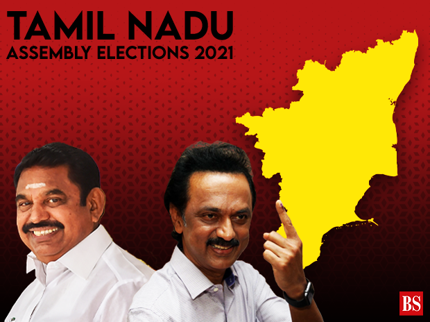

News
News
Coronavirus disease (COVID-19) is an infectious disease caused by a newly discovered coronavirus.Most people who fall sick with COVID-19 will experience mild to moderate symptoms and recover without special treatment.
The virus that causes COVID-19 is mainly transmitted through droplets generated when an infected person coughs, sneezes, or exhales. These droplets are too heavy to hang in the air, and quickly fall on floors or surfaces.
You can be infected by breathing in the virus if you are within close proximity of someone who has COVID-19, or by touching a contaminated surface and then your eyes, nose or mouth.
Tamil Nadu election result 2021 LIVE updates: After a decade in Opposition, the M K Stalin-led DMK has won a convincing victory over arch-rival AIADMK in Tamil Nadu. Stalin, 68, is set to become the Chief Minister for the first time. Counting of votes for 49 of the 234 seats in Tamil Nadu election 2021 is still underway. The DMK-led alliance has won 124 and is ahead in 32. The AIADMK, on the other hand, has won 59 and is leading in 17 constituencies.
Prime Minister Narendra Modi thanked the people of Tamil Nadu who voted for the National Democratic Alliance and said his party would continue to work for state's welfare and for nurturing the Tamil culture

Seventy lakh devotees participated in Haridwar's Kumbh Mela, the mammoth religious congregation which ended Friday after triggering a scare that it might have acted as a coronavirus "super-spreader".Despite the huge number of people gathering around Haridwar to take a dip in the holy Ganga, the 2021 event was a comparatively modest event -- reduced to just one month and scaled down midway due to the raging pandemic.
Held over three months in normal circumstances, the Kumbh Mela this time formally begun as late as April 1 due to concerns over COVID-19.
About 2,600 devotees tested positive out of the nearly two lakh tests conducted by medical personnel during the mela.